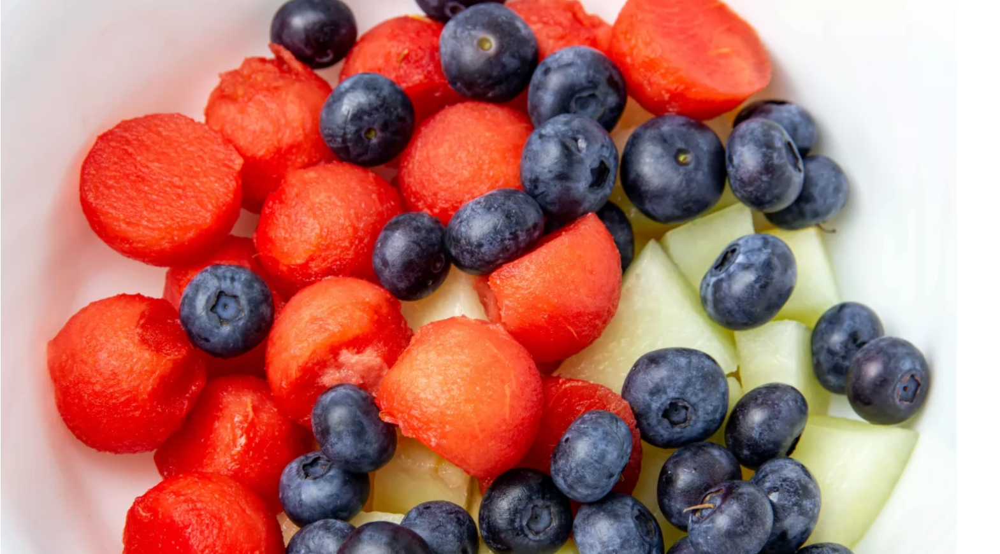
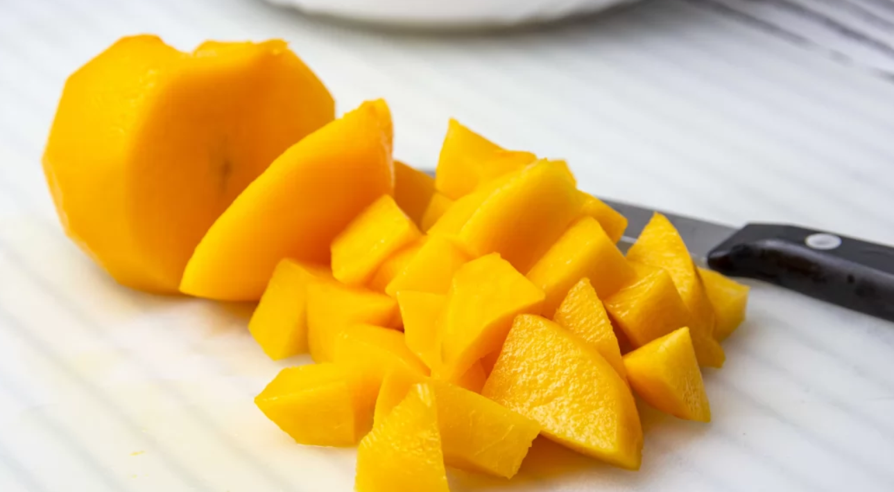
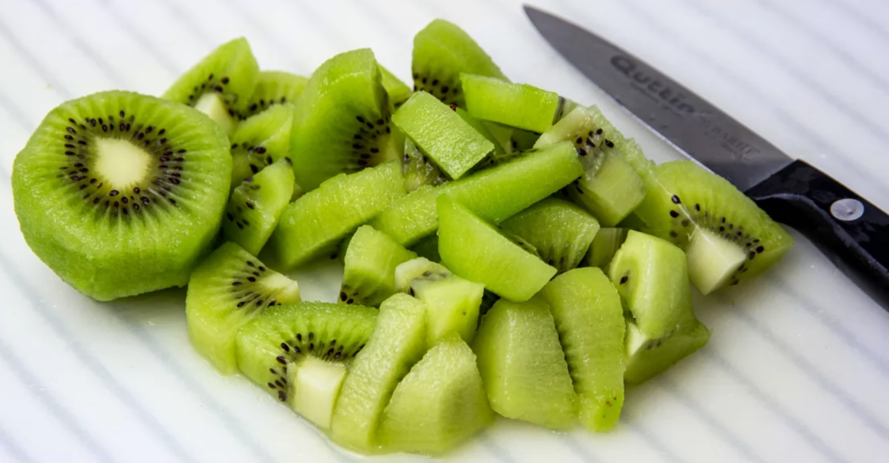
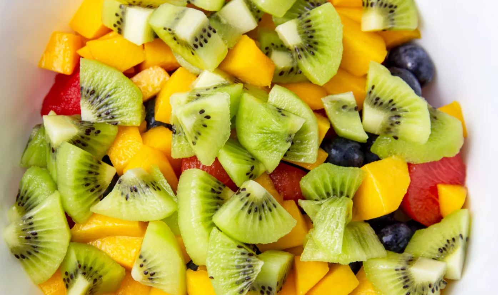
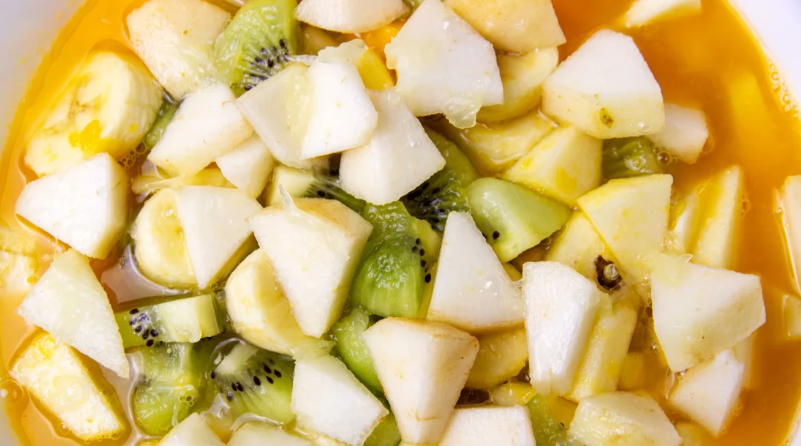
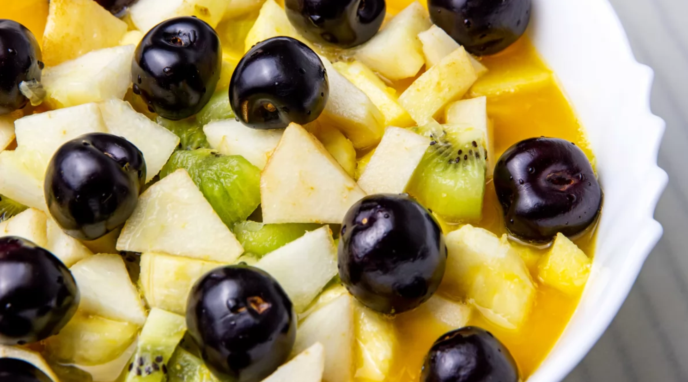

Paso a paso
- LIMPIAR Y PREPARAR Para hacer una buena macedonia de frutas lo primero que hacemos es lavar bien las frutas. A algunas no es necesario pelarlas, otras las pelaremos antes de trocear. Ponemos en el bol las frutas que tenemos ya preparadas con antelación. Las bolas de sandía (que las hemos hecho con un sacabolas), el melón troceado y los arándanos.
- CORTAR Y PELAR MELOCOTONES Pelamos y cortamos el melocotón. En este caso hemos elegido un melocotón amarillo. También podemos sustituirlo por el melocotón morado o por nectarina, al gusto.
- CORTAR Y PELAR KIWIS Pelamos y cortamos el kiwi. Los cortamos en rodajas y éstas en cuartos. No les haremos muy finos para que no se deshagan a la hora de mezclar la macedonia.
- PREPARACIÓN PLATO Añadimos al bol el melocotón y el kiwi.
- PREPARACIÓN ZUMO DE NARANJA Como ya tenemos unas cuantas frutas es el momento perfecto para exprimir el zumo de naranja. Utilizaremos aproximadamente unas 5-6 naranjas.
- AGREGAR EL ZUMO AL PLATO PREPARADO Añadimos el zumo de naranja a la macedonia de frutas y le añadimos también el zumo de medio limón. Esto evitará que algunas de las frutas que incorporemos se oxiden como es el caso del plátano, la pera o la manzana (que las añadiremos al final).
- AÑADIMOS CEREZAS Sólo nos queda poner el broche final a la macedonia de frutas con las cerezas. Hemos elegido las picotas porque son más dulces e intensas en sabor.






RESULTADO FINAL